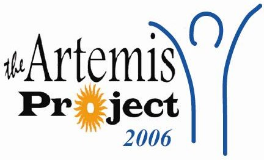

During the spring the coordinators get paid to organize the whole camp - recruit students, plan lunches, start course development, etc. Last spring we met for an hour weekly, plus each pair made one or two school visits each a week (to talk to students and recruit them for the program). We also spent some time on our own doing things like updating the webpage, making the brochure, emailing people, etc. During the summer it's a 9-5 for 8 weeks. We spent 2 1/2 weeks preparing lesson plans and getting everything ready and then 5 weeks actually doing the program. The great part about it is: you make the schedule. The coordinators have complete control over the program.
The knowledge you need is whatever you know. You need to understand fundamentals of programming. CS15 and CS16 or CS17 and CS18 will provide enough of that (Of course, more experience is welcomed!). But of course, you need to be willing to learn new things. There are plenty of people around to answer any questions you might have. We're looking for people from a variety of backgrounds, so it's definitely worth applying.
No. Artemis is really about figuring out what you want to do and how you want to do it. The 2006 and most of the 2005 coordinators will be around during the spring. Feel free to email us if you have questions about how things were done previously.
Pay is good. We received $1000 for the spring and $4000 for the summer.
It's really easy to find a good summer sublet in the spring off the daily jolt or Craigslist.org. Feel free to contact us with questions regarding our summer housing experiences.
Artemis was a ton of fun. We don't plan to do it again though. There are a few reasons for this: No
coordinator has ever done it twice. This way different people get the
opportunity to do it each year. Also, after junior year it is actually
possible and very valuable to get really cool internships or research
positions.